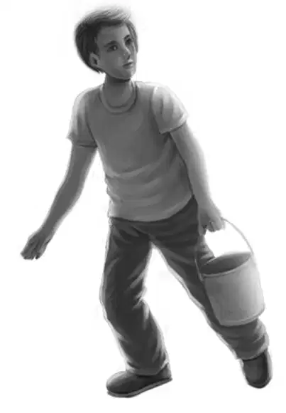
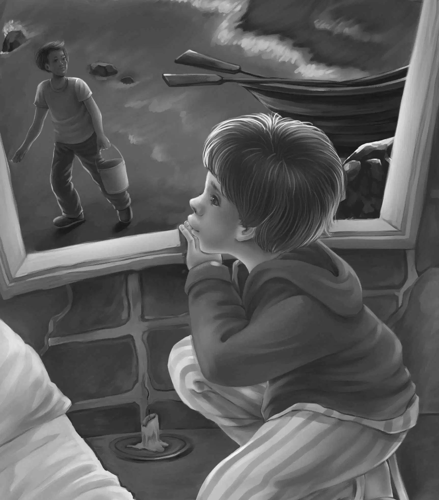

Little House with a Secret

奥登一家人带着新泳衣径直回到了灯塔。一换上泳衣，他们就奔向了那片可爱的白色海滩。
“大家要小心，”奥登先生提醒孩子们，“你们现在对这片海滩还不熟悉，得先弄清这里的水有多深才行。”
“我问过豪尔先生，他说灯塔另一侧才是深水区，”亨利说，“而这一片的海水没不过我的头顶。”
“我喜欢深水。”班尼说着已经游进了海里。
奥登家族的人都是天生的游泳健将，亨利和杰西甚至还会潜水，只是这一带的岩石太多，不太适合潜水。
天气很热，海水很凉。奥登先生坐在岩石椅子上，看着四个孩子在水里蹿上蹿下。他们还不时打打水仗，就连望望都开心地游来游去，汪汪地叫着。
“望望，现在你就尽情地叫个够吧！”维莉笑着说，“不过今天晚上可要安静一点哦！”可是她没有料到，在接下来的每一个夜晚，望望的叫声从未中断过。
那天晚上，一家人很晚才睡。夜色最浓时，班尼才回到自己顶层的房间。他穿着浅蓝色的睡衣，来到属于自己的小阳台上，在一张沙滩椅上坐了下来。
班尼并不知道，穿着轻便睡衣的他在月色下是多么引人注目。
他仰望着满天繁星，没有街灯的映衬，海上的星星似乎显得格外耀眼。这时，一颗星星突然动了起来，班尼很快就发现，那并不是星星，而是船上的灯光。小船正在入港，却突然停了下来，转头又向海里驶去。
“啊哦！”班尼想，“看来舵手改变主意了——只是不晓得他是谁。”
此时，无数个念头在班尼的脑海里闪过，他想起了罗思夫人在帽子店说的话，也想起了曾在码头上看到过的“库克二号”。
他蓦然想到：“不知道船上的人会不会看到我——我打赌他绝对看到了。那就毫无疑问了，绝对是库克家的孩子在偷开他爸的船。话说那船还真是漂亮呐！”
随即，班尼跳了起来，关上所有的灯，然后换了件黑色外套，趴在窗台上继续眺望着海面。果然，片刻之后，小船又再次掉头，终于驶进了离灯塔不远的码头。朦胧中，一个成人模样的人从船上跳了下来——不过班尼见过库克家的孩子，身形和成年男子差不多高大。只见那人弯下腰，从船里拿出一个水桶。

“这次的收获是水桶啊！”班尼暗自琢磨，“真想知道里面装的是什么！”
不过，他目前是无法得知的。
男孩警觉地向四周张望，整个小镇都在静谧中沉睡着，于是他提着桶，走上小路，很快便消失在夜色之中。之后，班尼也回到了床上。可惜的是，假如他再观察一会儿，就会有更多的发现，只是他很快就睡着了。
到了半夜12点，望望又开始叫唤了。
“天哪，望望！”杰西大声喊道，“看来你真的准备每晚闹腾了。好吧，给你十分钟，你就尽情地叫吧！”
果然，十分钟后，望望停了下来，并很快睡着了。
维莉无可奈何地看着它：“望望，你可真像个每晚吵夜的小宝宝！”
几个小时以后，望望又低吠了一阵子，不过并没有人听到。
接下来的几个晚上，望望都会如此叫唤一番，只是再没人感到诧异，更没人起床查看，因为大家都知道，只要叫上十分钟，望望准会停下来的。
不过，一天早晨，亨利皱着眉头说：“我再也受不了啦，小狗每天都这么闹腾，它肯定是发现什么了。”
两个女孩则说，她们又一次看到那神秘女子提着个包，从附近鬼鬼祟祟地走过。
亨利说：“就算把周围翻个底朝天，我也要查清楚那女人来这里的原因。”
“我们来帮你！”杰西说。
在灯塔另一边的室外小厨房后面，有几块巨大的岩石，岩壁陡峭入海。奥登家的四个孩子仔细搜索了每个地方，想找到能通往白色小屋的路径，可惜什么也没发现。
这时，亨利建议道：“我们去检查一下钉在窗户上的那些木板吧！那上面肯定会有裂缝，我们可以透过缝隙看看屋子里到底有什么。”
他们抬头仔细检查了每扇窗户。“看到最上面的那块木板了吗？”杰西指着上方，“那里倒是有道大缝可以望进屋里，可惜太高了。”
“杰西，真有你的！”亨利说，“你是说我高度不够对吧？可班尼够啊！”
“说什么呢？”维莉笑了，“你比班尼可要高多了。”
“来吧，班尼！”亨利也笑了，“我弯下腰，你踩在我背上不就可以看到了吗？”
“酷呆啦！”班尼欢叫着，像小猴子一样爬到亨利的背上，站直了身，双手拢住眼睛两旁，透过木板裂缝向小屋里看去。
“看清楚了，”班尼说，“前门那儿还有一条大缝，咱们刚才都没发现。哇噢，果然有人在这儿做过饭！”他大声喊道，“屋里有个炉子，上面放着平底锅。地上有几桶水，水里有些棕色的玩意儿。桌上摆着小显微镜，不过太小了，应该没啥用，我估计它顶多只值三块钱。还有很多画着小方格的纸，跟我们发现的那张很像。对了，还有不少书呢！”
“好极了！”杰西兴奋不已，“你能看清水桶里装的是什么吗？”
“应该是海草，”班尼大声说，“满地都是海草，连炉子上的水壶边也挂着一些呢！”
“真奇怪，”维莉费解地问，“这屋里的一切说明了什么呢？”
“很显然，说明有人每天深更半夜都会来这儿，所以望望才会叫个不停。”亨利说。
“来的是那个神秘女子吗？”杰西问。
“亨利，站在你背上听你说话真有趣！”班尼说，“看啊，餐架上还有些盘子和杯子。唔，那一袋好像是面粉呢！”
“班尼，快下来吧，”亨利说，“你越来越重了！”
班尼轻巧地跳到地上。
“窗户下面还有一个桶，我看不清楚里面装的是什么，”班尼说，“不过看上去倒是闪闪发亮的。”
“闪闪发亮？”亨利问，“那会是什么？等等，你们还记得在蓝色海湾附近看过的水下小精灵吗？我猜桶里就是它们——那些浮游生物。”
“我想也是，”班尼说，“在蓝色海湾时我曾在显微镜下研究过它们，都是各种肉眼看不到的小鱼和鱼卵之类。”
“这里的显微镜估计也是起着同样的作用，”亨利沉吟着说，“都是用来研究浮游生物和海草的。”
“看来咱们收获并不大，”杰西说，“到现在为止，我们所能掌握的线索只有一个，那就是一个女子每晚都会来这里忙活，我想这也许是她的特殊癖好吧！”
“可为什么她每天都只在半夜三更时过来，而且只待上十分钟呢？”班尼插了进来，“这说得过去吗？要知道十分钟能干什么啊！”
亨利说：“依我看，一个潜心研究海草的人不是什么危险人物。或许她在顾忌着什么，才会躲到这儿来。”
“那就奇怪了，亨利，既然她潜心研究海草的话，”维莉追问道，“又怎么解释屋里会有炉子，而我们每天晚上都能闻到饭菜的香味？”
“这我就不清楚了。”亨利沉吟道，“我只听说海草可以用来喂牛、喂马、喂猪，但就连它们都不会吃——海草应该是难吃得很。”
“等等！”班尼突然说道，“刚才我还看到了别的东西，我看到架子上放着几个小袋，像是装面粉和糖用的，另外还有几个没有标识的小包。”
“那你们认为这些又是做什么用的呢？”维莉问。
“也许是有人想将海草的味道调得美味一点！”杰西调侃道，“咱们走吧！爷爷会有好主意的。”
奥登先生听孩子们讲完了奇遇后，果然提出了自己的想法：“豪尔先生之前和我提到过库克家的孩子，他说那孩子常常整个上午都在睡觉。”
“对啊，”杰西说，“你们还记得吗？罗思夫人曾说过，库克家的孩子经常偷开他爸的船在晚上出海，因此在大白天睡觉并不稀奇。”
突然，班尼叫了起来：“瞧我多傻！我只凭自己所看到的情况，就断定在小厨房里的是那神秘女子，却漏掉了一条可以连贯起来的线索。”
说到这里他停了下来，亨利不禁催促道：“继续讲啊！”
班尼接着往下说：“你们还记得吗？我曾经看见库克家的孩子从他爸的船里提着一个桶出来，我一直以为他是顺着街道走下去了，我敢肯定，要是当时能再多观察一会儿，就会看到他其实是到了小厨房。所以，库克家的孩子和神秘女子都与我们的谜案有关系！”
亨利也推断道：“那张看起来像大学实验记录的带方格的纸，很可能也是属于库克家孩子的。要是他晚上确实去过小厨房，这张纸在咱们附近出现就可以解释了。”
“或许我们应该把那张纸从窗户塞回到小厨房去。”班尼说，“库克家的孩子可能需要它。”
“这可不行，班尼！”亨利赶紧说，“如果我们把它塞进去，他就会知道有人去过那里，现在咱们要做的是，先和他交朋友，再告诉他我们所了解的情况。”
“可是，我不知道怎样才能和那个凶巴巴的男孩交朋友。”班尼说，“他自己说的，他根本不需要朋友。”
“说是这么说，”亨利说，“可我觉得他还是需要朋友的，只是他自己没意识到这一点。”